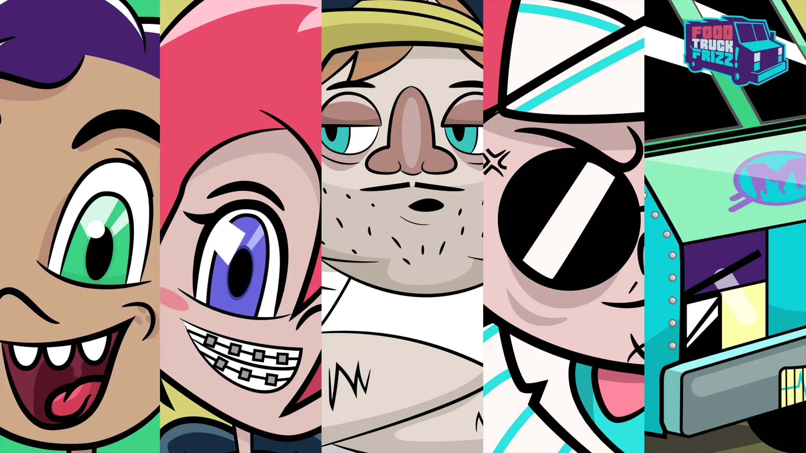
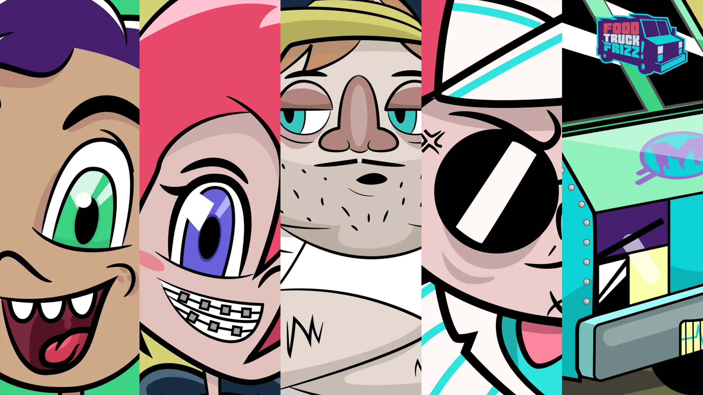

Inspired by my time in Los Angeles, where food trucks reign supreme,
Food Truck Frizz is my original IP that tells the story of a
shape-shifting alien who accidentally crash lands in Venice, CA and
disguises his talking spaceship as a food truck. Little did he know,
the foodtruck community would take him in as one of their own.
Inspired by my time in Los Angeles, where food trucks reign supreme,
Food Truck Frizz
... Read More
is my original IP that tells the story of a shape-shifting alien who
accidentally crash lands in Venice, CA and disguises his talking
spaceship as a food truck. Little did he know, the foodtruck
community would take him in as one of their own.
 
